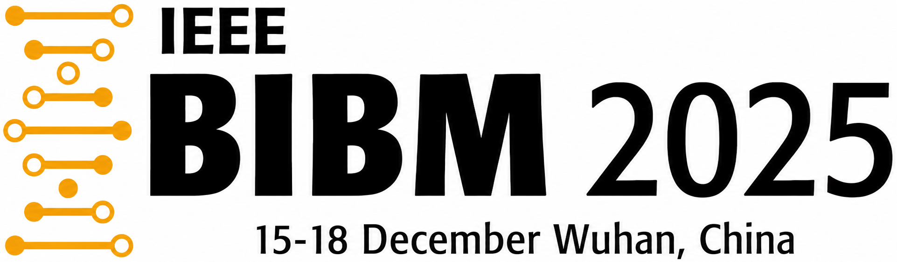

About me
👋 Welcome!
Hi! I’m Yingtie Lei. I’m currently an M.S. student in Computer Science and Engineering at The Ohio State University, where I work with Prof. Wei-Lun (Harry) Chao and Prof. Mi Zhang. I’m also a remote intern at the University of Macau, where I collaborate with Prof. Chi-Man Pun and Dr. Xuhang Chen. Before OSU, I received my B.E. in Intelligent Science and Technology from South China University of Technology.
My research interests include low-level vision and explainability in computer vision, with a broader focus on building more transparent and reliable visual learning systems. Recently, I have also been exploring how agentic systems can be integrated with a range of deep learning tasks.
Seeking Ph.D. positions: I am actively looking for Ph.D. opportunities for Spring/Fall 2027. If you know of any suitable openings, please feel free to reach out. I would truly appreciate any leads and would be happy to chat. 😊
Selected work
📑 Publications
-
-
FS-RWKV: Leveraging Frequency Spatial-Aware RWKV for 3T-to-7T MRI Translation

｢BIBM 2025｣ -
-